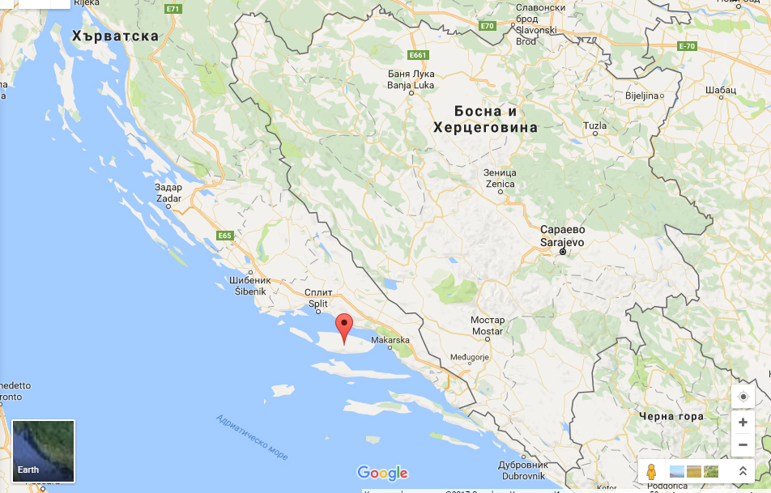

За острова
Брач (на хърватски: Brač, на италиански: Brazza, на латински: Brattia) е третият по големина от далматинските острови и първи от южнодалматинските. Площта му е 394,57 кв.км., дължината – 40 km, широчината – 12 km. Бреговата му линия – 175.1 км. Остров Брач е трети и по население, след Крък и Корчула. На Брач се намира най-високият връх на хърватските острови – Видова гора (780 m). Остров Брач е заселен още в неолита. През 4 век пр.н.е. е колонизиран от Древна Гърция, а през 3 век пр.н.е. става владение на Римската република. През 8 век е населен от неретляните и става част от Пагания, след което дълго време е под контрола на хърватските князе на Омиш и Сплит. През 13 век е под властта на короната на Свети Стефан, а от 14 век (1420 г.) преминава под юрисдикцията на венецианската република. В края на 18 век, след кратко немско и френско владение, преминава под властта на Австрийската империя от 1815 г., като през 1807 г. край острова се стационира ескадрата на адмирал Фьодор Ушаков. През 20 век е обект на известния спор за Далмация. Повече информация за острова може да намерите тук
